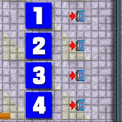
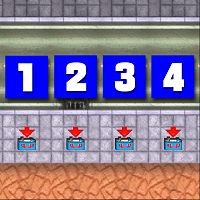

El Burro
このチャプターは E Glen Wood からスタートします。指示を受けるため、N Telephone Hill の公衆電話に向かってください。ちなみに、このチャプターは後にGTA3にも登場する El Burro がボスとなります。
| ボス | El Burro |
|---|---|
| 目標スコア | 300万 |
| ミッション | 16 |
この4つの公衆電話はそれぞれミッション1,3,5および7につながっています。攻略はどのミッションからでも結構です。
| N Telephone Hill |
 |
N Eagleside の電話で詳細な指示を受けます。
まず、バスを破壊するための武器を取りに行きます。NW Woodside にあるロケット弾を取ったら、C Aye Valley の駐車場に向かってください。
駐車場には5台のバスが駐車されていますので、すべて破壊してください。すると、次は走行中のバスを破壊するように指示されます。
NW Eagleside 付近と、SW Eagleside 付近を走行中のバスを破壊するとミッション完了です。
| スコア | チェックポイント |
|---|---|
| (各)+1,000 | 駐車場のバスを破壊する |
| (各)+1,000 | 走行中のバスを破壊する |
| +45,000 | すべてのバスを破壊する (Mission Complete) |
ロケット弾を打つ時は、ターゲットとの距離に気をつけましょう。このミッションは、ミッション失敗がないですね。
金の入ったカバンが S Potato にあります。
カバンを取ったら E Marina、NE Glen Wood、SE Aye Valley、E Sunview と回って金を渡していってください。
すると、この件をかぎつけた警官がいることを聞かされます。奴はパトカーで N Woodside 付近を走行していますので、見つけだして殺すとミッション完了です。
| スコア | チェックポイント |
|---|---|
| (各)+1,000 | 謝礼金を渡す |
| +40,000 | 本件をかぎつけた警官を殺す (Mission Complete) |
C Richman の電話で詳細な指示を受けます。
まず、Paco から話を聞くため E Sunview に向かいます。すると、橋の向こうにいる Alve の一味を迎えに行くように言われます。出発する前に、敷地内にある防弾チョッキを取った方がいいでしょう。
W Woodside に行くと、銃を撃ちながら追いかけてきますので、先ほどの Paco の所へ戻ってください。
すると、ボスからどさくさに紛れて Paco を殺すように指示されます。彼を殺すとミッション完了です。
| スコア | チェックポイント |
|---|---|
| +50,000 | どさくさに紛れて Paco を殺す (Mission Complete) |
なんだかよくわからないミッション
4台の TV Van を320秒以内に始末するとミッション完了です。
| スコア | チェックポイント |
|---|---|
| (各)+1,000 | TV Van を破壊する |
| +40,000 | すべての TV Van を破壊する (Mission Complete) |
時間はそれほど厳しくないと思います。ロケット弾かマシンガンがないとつらいです。
SE Excalibur の電話で詳細な指示を受けます。
440秒以内に、8人の警官を順番に殺していってください。全員殺すとミッション完了です。
| スコア | チェックポイント |
|---|---|
| +1,000 | C Eagleside 付近にいる警官を殺す |
| +2,000 | SE Chinatown 付近にいる警官を殺す |
| +3,000 | C Glen Wood 付近にいる警官を殺す |
| +4,000 | C Sailors Wharf 付近にいる警官を殺す |
| +5,000 | SW Marina 付近にいる警官を殺す |
| +6,000 | NE Aye Valley 付近にいる警官を殺す |
| +7,000 | NE Sunview 付近にいる警官を殺す |
| +8,000 | E Woodside 付近にいる警官を殺す |
| +40,000 | 警官全員を殺す (Mission Complete) |
殺すときは車でひき殺すようにしましょう。警官は車を乗り越えられないので、低速でぶつかってもひき殺せます。あとは、ペイントショップにこまめに寄るのが吉
E Sunrise に停まっている Portsmouth と Itali GTO と Vulture の3台を、E Woodside に捨ててください。岸壁の手前に停めて、別の車で後ろから突っつくようにして海に落とすといいです。3台目は警察に手配されます。
3台とも処分するとミッション完了です。
| スコア | チェックポイント |
|---|---|
| (各)+1,000 | 車を処分する |
| +40,000 | すべての車を処分する (Mission Complete) |
指定の場所から落とさないとだめです
SW Wood Hill の電話で詳細な指示を受けます。
トラックは SE Sunview 付近を走行中です。車を襲うと運転手に反撃されるので気をつけてください。
トラックを奪ったら SE Sunview のペイントショップでプレートを付け替えて N Woodside のガレージまで運搬してください。
ガレージに車を収めるとミッション完了です。
| スコア | チェックポイント |
|---|---|
| +5,000 | トラックを奪う |
| +45,000 | トラックを N Woodside のガレージに収める (Mission Complete) |
運転手にさえ気をつければ問題ないでしょう。
先ほどのトラックの薬品の影響で錯乱状態に陥った部下7人を殺すように指示されます。
部下は各所にいますので順番に殺していってください。全員殺すとミッション完了です。
| スコア | チェックポイント |
|---|---|
| +1,000 | C Eagleside 付近にいる Pepe を殺す |
| +1,000 | NW Eagleside 付近を運転中の Jorge を殺す |
| +1,000 | NE Woodside 付近にいる Jose を殺す |
| +1,000 | SE Richman 付近を運転中の Pedro を殺す |
| +1,000 | NW Atlantic Heights 付近にいる Alfonso を殺す |
| +1,000 | NE Sailors Wharf 付近を運転中の Rodrigo を殺す |
| +1,000 | NW Woodside 付近にいる Chico を殺す |
| +50,000 | 7人の部下全員を殺す (Mission Complete) |
やるせないミッションです。ちなみに、前のミッションを失敗していると Jefe がトラックを盗んだことになっています。
N Telephone Hill の電話ミッションがすべて終わると、今度はこちらに移されます。この4つの公衆電話はそれぞれミッション9,11,13および15につながっています。攻略はどのミッションからでも結構です。
| NE Sailors Wharf |
 |
N Potato の電話で詳細な指示を受けます。
ボスの車が SW Marina にありますので、そこに向かってください。車に乗ったら SW Sunview にある Tallon の家に向かってください。
ボスの車で行くとゲートを開けてもらえます。敷地の奥に進んでいくと、Tallon の部下が襲いかかってきて、この話が罠だったことがわかります。
応戦して、Tallon の部下11人全員を殺すとミッション完了です。ついでに、敷地の奥にある Multiplier Up! を取っておきましょう。
| スコア | チェックポイント |
|---|---|
| (各)+1,000 | Tallon の部下を殺す |
| +45,000 | Tallon の部下を全員殺す (Mission Complete) |
ミッションが終わったら、次のミッションに備えて Atlantic Heights 方面に走り出しておくといいです。
前のミッションが終わったら、120秒以内に S Atlantic Heights の警察署に向かってください。
しばらく待っていると、Tallon が戻ってきます。奴は自分の車に乗り換えて警察署を出ていきますので、追跡してください。ボスからのゴーサインを待って奴を殺すと、ミッション完了です。
| スコア | チェックポイント |
|---|---|
| +50,000 | Mike Tallon を殺す (Mission Complete) |
早まって奴を殺してしまわないように気をつけてください。
SE Sailors Wharf の電話で詳細な指示を受けます。
N Woodside にいくと爆発事件が起こり、彼は殺されてしまいます。
現場を走り去った Portsmouth を追いかけて、運転手を引きずり出してください。奴を殴ると隠れ家の場所を白状します。白状後、奴を殺すと「GRATUITOUS VIOLENCE BONUS!」と表示されますが、何故かボーナスは一切入りません。
最寄りの爆弾ショップで爆弾をセットしたら、C Marina にある連中の隠れ家に向かいます。爆弾を作動させ、車を降りて離れてください。数秒後に、隠れ家が破壊され、ミッション完了です。
| スコア | チェックポイント |
|---|---|
| +5,000 | 実行犯を殴り、隠れ家の場所を白状させる |
| +0 | (オプション)白状後、奴を殺す |
| +1,000 | 車に爆弾を仕掛ける |
| +40,000 | 事件を起こした連中の隠れ家を破壊する (Mission Complete) |
ヤクザのリムジンを破壊するように指示されます。リムジンは W Sunview と S Sunview と NE Sunview にあります。車に近づくと、ヤクザから反撃を受けますので、気をつけて行動してください。
次に、SW Sunview にあるリムジンを盗むように指示されます。リムジンに乗り込んだら、ヤクザの妨害をかいくぐって NE Woodside のガレージまで持っていくとミッション完了です。
| スコア | チェックポイント |
|---|---|
| (各)+1,000 | ヤクザのリムジンを破壊する |
| +1,000 | SW Sunview にあるリムジンに乗り込む |
| +50,000 | リムジンを NE Woodside のガレージに収める (Mission Complete) |
防弾チョッキ必携です。
SW Woodside の電話で詳細な指示を受けます。
連中は E Excalibur にいます。近づくと襲いかかってきますので、応戦し、6人全員を殺すとミッション完了です。
| スコア | チェックポイント |
|---|---|
| +40,000 | 連中を全員殺す (Mission Complete) |
NW Sunview に駐車してある Love Wagon に乗り込むと、ラジコンの操縦モードになります。
このラジコンを操縦し、SW Telephone Hill にある研究所を目指してください。敷地に入ると護衛がマシンガンで攻撃してきます。攻撃をかいくぐって、研究所の中でラジコンを爆破するとミッション完了です。ラジコンが破壊されるとやり直しです。ラジコンは全部で5台用意されています。
| スコア | チェックポイント |
|---|---|
| +40,000 | 研究所を破壊する (Mission Complete) |
最初の3台くらいは護衛を片づけることに集中した方がいいかもしれません。
SE Potato の電話で詳細な指示を受けます。
ボスから、映画の撮影に使用する車を集めるように指示されます。車種を順番に指定されますので、その車を見つけたら C Glen Wood のガレージに収めてください。
4台すべて集めるとミッション完了です。一応、タイムリミットもあるので気をつけてください。
| スコア | チェックポイント |
|---|---|
| +1,000 | 救急車をガレージに収める |
| +1,000 | 消防車をガレージに収める |
| +1,000 | Juggernaut をガレージに収める |
| +1,000 | パトカーをガレージに収める |
| +30,000 | すべての車を集める (Mission Complete) |
ミッション開始時、救急車は C Excalibur と S Glen Wood の病院に、消防車は E Sunview の消防署に配備されますので、探し回る必要はありません。
C Sunview に駐車してある Speeder に乗るように指示されます。すると前のチャプターで主人公をはめた Bryson が再び登場します。
車には爆弾が仕掛けられていることを聞かされますので、120秒以内に E Soviet Hill に向かってください。時間内に到着したら、側に停まっている Itali GTO に乗り換えてください。
以下同様に、E Sailors Wharf の 4 X 4 、S Atlantic Heights の Mamba と乗り換えていってください。
最後に、C Sailors Wharf にいる Bryson の所へ行くことになります。奴に近づくと走り出しますので、車で追いかけて轢き殺すとミッション完了です。
| スコア | チェックポイント |
|---|---|
| +1,000 | Speeder に乗り込む |
| +1,000 | Itali GTO に乗り込む |
| +1,000 | 4 X 4 に乗り込む |
| +1,000 | Mamba に乗り込む |
| +45,000 | Bryson を殺す (Mission Complete) |
クリアポイントの300万点を獲得したら NE Aye Valley の Red Clam bar にいる El Burro に会いに行ってください。